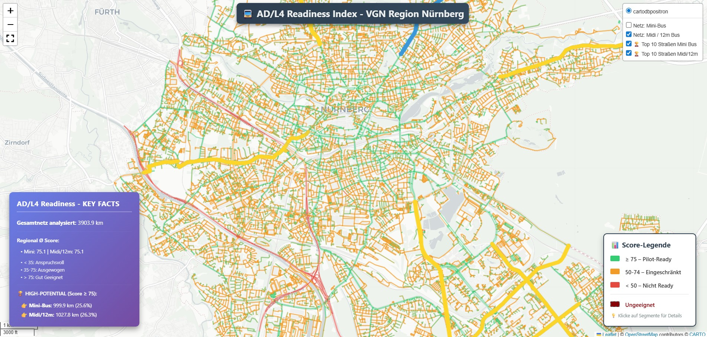
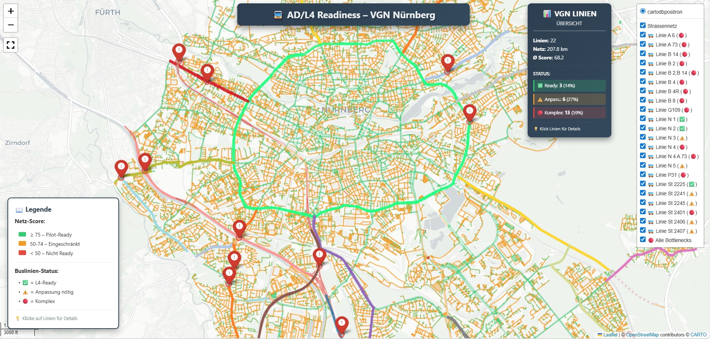

Beispiel 1 – AD/L4 Readiness Index
Visualisierung des Readiness Index im regionalen Straßennetz mit priorisierten Straßenabschnitten und Score-Logik als Grundlage für die Vorqualifikation.
Das AD Readiness Framework strukturiert die Bewertung autonomer Mobilitätsanwendungen von der Datenbasis bis zur priorisierten Pilotentscheidung.
Die Analyse kombiniert infrastrukturelle, technische, betriebliche und strategische Kriterien und übersetzt diese in priorisierte Pilotkorridore sowie einen belastbaren AD Readiness Index.

Nachfolgend zwei exemplarische Visualisierungen, wie AD Readiness Analyseergebnisse für urbane Netze und Linienstrukturen aufbereitet werden können.

Visualisierung des Readiness Index im regionalen Straßennetz mit priorisierten Straßenabschnitten und Score-Logik als Grundlage für die Vorqualifikation.

Verknüpfung von Linienstruktur, Engpässen und Readiness-Bewertung zur schnellen Einordnung von L4-Potenzialen auf konkreten Betriebskorridoren.
Interaktive Detailansichten und weiterführende Analysebeispiele können bei Bedarf im direkten Austausch vorgestellt werden.